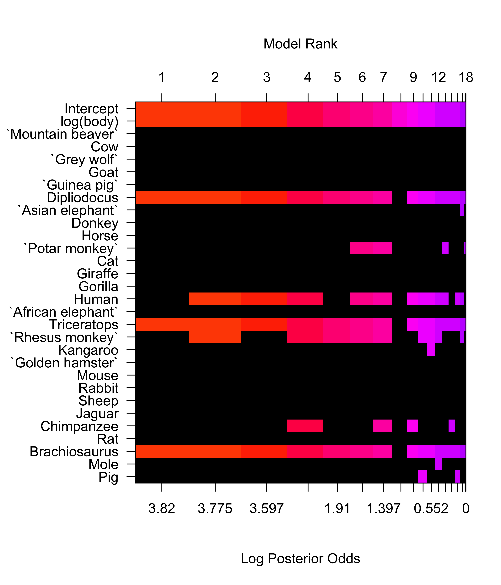

data(Animals, package="MASS")
plot(brain ~ body, data=Animals, xlab="Body Weight (kg)", ylab="Brain Weight (g)", main="Original Units")
STA 721: Lecture 22
Duke University
Readings: Christensen Chapter 13, Seber & Lee Chapter 10 & Wakefield Chapter 6
Linear Model: \[ \mathbf{Y}= \boldsymbol{\mu}+ \boldsymbol{\epsilon}\]
Assumptions:
\[\begin{eqnarray*}
\boldsymbol{\mu}\in C(\mathbf{X}) & \Leftrightarrow & \boldsymbol{\mu}= \mathbf{X}\boldsymbol{\beta}\\
\boldsymbol{\epsilon}& \sim & \textsf{N}(\mathbf{0}_n, \sigma^2 \mathbf{I}_n)
\end{eqnarray*}\]
QQ-Plots are a graphical tool to assess normality
Order residuals \(e_i\): \(e_{(1)} \le e_{(2)} \ldots \le e_{(n)}\) sample order statistics or sample quantiles (standardized - divide by \(\sqrt{1 - h_{ii}}\)
Let \(z_{(1)} \le z_{(2)} \ldots z_{(n)}\) denote the expected order statistics of a sample of size \(n\) from a standard normal distribution ``theoretical quantiles’’
If the \(e_i\) are normal then \(\textsf{E}[e_{(i)}/\sqrt{1 - h_{ii}}] = \sigma z_{(i)}\)
Expect that points in a scatter plot of \(e_{(i)}/\sqrt{1 - h_{ii}}\) and \(z_{(i)}\) should be on a straight line.
Judgment call - use simulations to gain experience!
data(Animals, package="MASS")
plot(brain ~ body, data=Animals, xlab="Body Weight (kg)", ylab="Brain Weight (g)", main="Original Units")
Recall:
\[\begin{eqnarray*} \mathbf{e}& = &(\mathbf{I}- \mathbf{P}_\mathbf{X}) \mathbf{Y}\\ & = & (\mathbf{I}- \mathbf{P}_\mathbf{X})(\mathbf{X}\hat{\boldsymbol{\beta}}+ \boldsymbol{\epsilon}) \\ & = & (\mathbf{I}- \mathbf{P}_\mathbf{X})\boldsymbol{\epsilon} \end{eqnarray*}\]
\[e_i = \epsilon_i - \sum_{j=1}^n h_{ij} \epsilon_j\]
Lyapunov CLT (independent but not identically distributed) implies that residuals will be approximately normal (even for modest \(n\)), if the errors are not normal
Supernormality of residuals
clearly not the case here!
Box and Cox (1964) suggested a family of power transformations for \(Y > 0\)
\[
U(\mathbf{Y}, \lambda) = Y^{(\lambda)} = \left\{
\begin{array}{ll}
\frac{(Y^\lambda -1)}{\lambda} & \lambda \neq 0 \\
\log(Y) & \lambda = 0
\end{array} \right.
\]
Estimate \(\lambda\) by maximum Likelihood
\[{\cal{L}}(\lambda, \boldsymbol{\beta}, \sigma^2) \propto \prod f(y_i \mid \lambda, \boldsymbol{\beta},
\sigma^2)\]
\(U(\mathbf{Y}, \lambda) = Y^{(\lambda)} \sim \textsf{N}(\mathbf{X}\boldsymbol{\beta}, \sigma^2)\)
Jacobian term is \(\prod_i y_i^{\lambda - 1}\) for all \(\lambda\)
Profile Likelihood based on substituting MLE \(\boldsymbol{\beta}\) and \(\sigma^2\) for each value of \(\lambda\) is \[\log({\cal{L}}(\lambda) \propto (\lambda -1) \sum_i \log(Y_i) - \frac{n}{2} \log(\textsf{SSE}(\lambda))\]
plot(brain ~ body, data=Animals, xlab="Body Weight (kg)", ylab="Brain Weight (g)", log="xy", main="Logarithmic Scale")
logbrains.nodino.lm = lm(log(brain) ~ log(body) +
I(row.names(Animals) == "Triceratops") +
I(row.names(Animals) == "Brachiosaurus") +
I(row.names(Animals) == "Dipliodocus"),
data=Animals)
anova(logbrain.lm, logbrains.nodino.lm)Analysis of Variance Table
Model 1: log(brain) ~ log(body)
Model 2: log(brain) ~ log(body) + I(row.names(Animals) == "Triceratops") +
I(row.names(Animals) == "Brachiosaurus") + I(row.names(Animals) ==
"Dipliodocus")
Res.Df RSS Df Sum of Sq F Pr(>F)
1 26 60.988
2 23 12.117 3 48.871 30.92 3.031e-08Animals = cbind(Animals, diag(28)); colnames(Animals)[3:30] = rownames(Animals)
brains.bas = bas.lm(log(brain) ~ log(body) + . - body, data=Animals,
prior="hyper-g-n", a=3,modelprior=beta.binomial(1,28), method="MCMC", n.models=10000, MCMC.it=2^17)
image(brains.bas, rotate=FALSE)
If \(Y - \mu\) (approximately) \(N(0, h(\mu))\)
Delta Method implies that \[g(Y) \stackrel{\cdot}{\sim}\textsf{N}( g(\mu), g'(\mu)^2 h(\mu))\]
Find function \(g\) such that \(g'(\mu)^2 h(\mu)\) is constant \[g(Y) \sim N(g(\mu), c)\]
Poisson Counts (need \(Y > 3\)), \(g\) is the square root transformation
Binomial: \(\arcsin(\sqrt{Y})\)
Note: transformation for normality may not be the same as the variance stabilizing transformation; boxcox assumes mean function is correct
Generalized Linear Models are preferable to transforming data, but may still be useful for starting values for MCMC
Drug concentration of caldralazine at time \(X_i\) in a cardiac failure patient given a single 30mg dose \((D = 30)\) given by \[ \mu(\boldsymbol{\beta}) = \left[\frac{D}{V} \exp(-\kappa_e x_i) \right] \] with \(\boldsymbol{\beta}= (V, \kappa_e)\) \(V = volume\) and \(\kappa_e\) is the elimination rate
If \(Y_i = \left[\frac{D}{V} \exp(-\kappa_e x_i) \right] \times \epsilon_i\) with \(\log(\epsilon_i) \mathrel{\mathop{\sim}\limits^{\rm iid}} N(0, \sigma^2)\) then the model is intrinisically linear (can transform to linear model)
\[\begin{eqnarray*} \log(\mu(\boldsymbol{\beta})) & = & \log\left[\frac{D}{V} \exp(-\kappa_e x_i) \right] = \log[D] - \log(V) -\kappa_e x_i \\ log(Y_i) - \log[30] & = &\beta_0 + \beta_1 x_i + \epsilon_i \end{eqnarray*}\] where \(\epsilon_i\) has a log normal distribution
If \(\mathbf{Y}= \left[\frac{D}{V} \exp(-\kappa_e x_i) \right] + \epsilon_i\) model is intrinisically nonlinear and cannot transform to a linear model.
need to use nonlinear least squares to estimate \(\boldsymbol{\beta}\) and \(\sigma^2\)
or MCMC to estimate the posterior distribution of \(\boldsymbol{\beta}\) and \(\sigma^2\)
df = data.frame(y=y, x=x)
logconc.nlm = nls( log(y) ~ log((30/V)*exp(-k*x)), data=df, start=list(V=vhat, k=khat))
summary(logconc.nlm)
Formula: log(y) ~ log((30/V) * exp(-k * x))
Parameters:
Estimate Std. Error t value Pr(>|t|)
V.(Intercept) 16.66331 7.11923 2.341 0.057796
k.x 0.15211 0.02368 6.423 0.000673
Residual standard error: 0.7411 on 6 degrees of freedom
Number of iterations to convergence: 0
Achieved convergence tolerance: 4.056e-09
Formula: y ~ (30/V) * exp(-k * x)
Parameters:
Estimate Std. Error t value Pr(>|t|)
V 13.06506 0.60899 21.45 6.69e-07
k 0.18572 0.01124 16.52 3.14e-06
Residual standard error: 0.05126 on 6 degrees of freedom
Number of iterations to convergence: 4
Achieved convergence tolerance: 7.698e-06Interest is in
clearance: \(V \kappa_e\)
elimination half-life \(x_{1/2} = \log 2/\kappa_e\)
Use properties of MLEs: asymptotically \(\hat{\boldsymbol{\beta}} \sim N\left(\boldsymbol{\beta}, I(\hat{\boldsymbol{\beta}})^{-1}\right)\)
Asymptotic Distributions
Bayes obtain the posterior directly for parameters and functions of parameters!